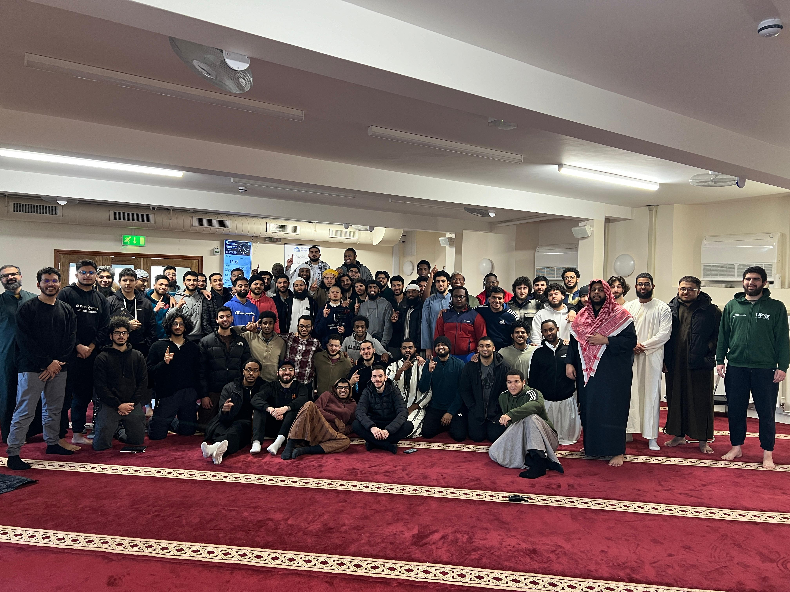
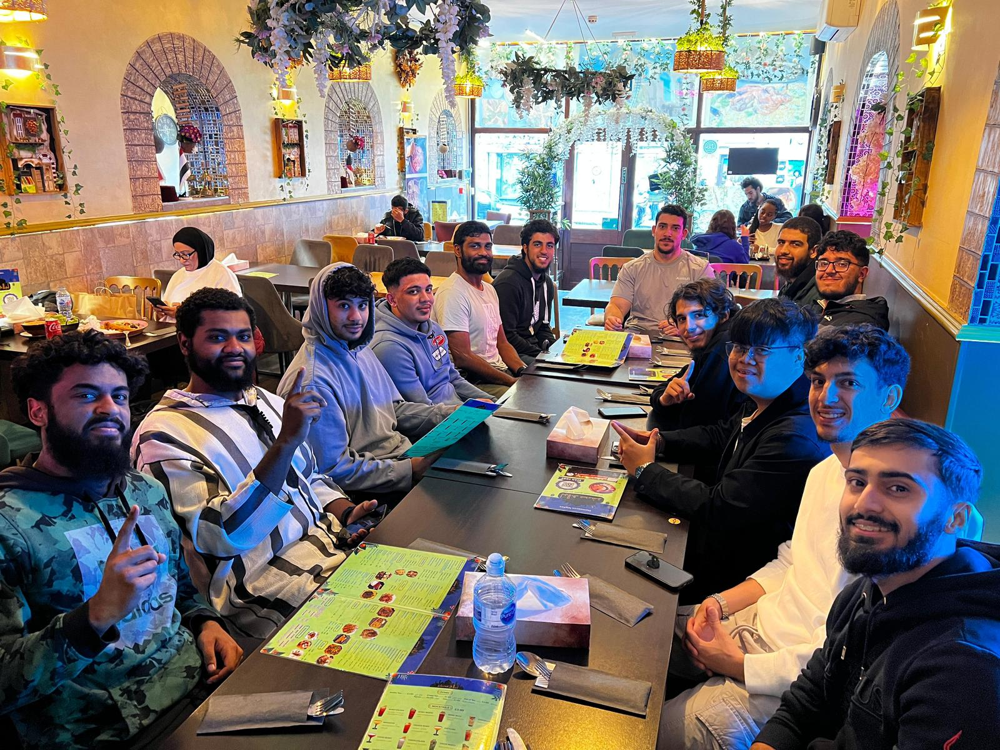
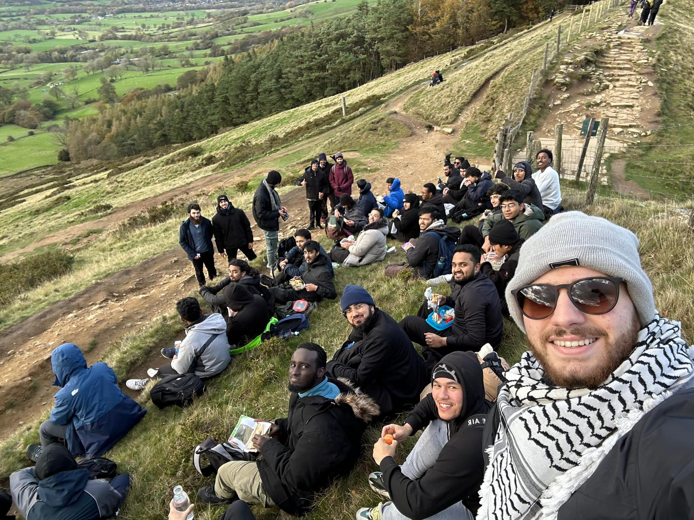

The Islamic Society at the University of the West of England exists to support Muslim students during their university journey and to create a welcoming community centred around faith, knowledge, and service.

For many students arriving in Bristol, university can feel overwhelming and unfamiliar. UWE ISoc aims to make that transition easier by creating a space where Muslim students can connect with others who share their values and faith. The society works to cultivate a God-centred environment where students can grow spiritually while pursuing their academic goals.
Throughout the year we organise educational circles, talks, social gatherings, and community initiatives that bring students together and strengthen their understanding of Islam. These events provide opportunities for learning, reflection, and building friendships that last far beyond university.

Ramadan is always one of the most special times on campus. Students come together for prayer, reflection, and community iftars that bring warmth and unity during the blessed month. As we enter the final nights of Ramadan, we are turning our attention to the months ahead and the programmes we hope to run after Ramadan finishes.
Your support will help us continue organising events, educational programmes, and initiatives that benefit Muslim students and the wider campus community throughout the year.

UWE Islamic Society has been serving students for decades, helping them stay connected to their faith while navigating university life. Our vision is to cultivate a campus where Muslim students feel confident in their Islamic identity and are supported spiritually, mentally, and academically.
With your support, we can continue creating spaces where students feel welcomed, supported, and inspired.
Account Name: UCT VENTURES LTD
Sort Code: 04-00-03
Account Number: 43506907
Reference: ISOC Donation
May Allah reward you for your generosity and allow this support to be a means of benefiting students and the wider community.